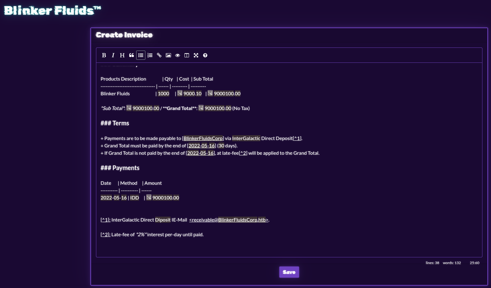
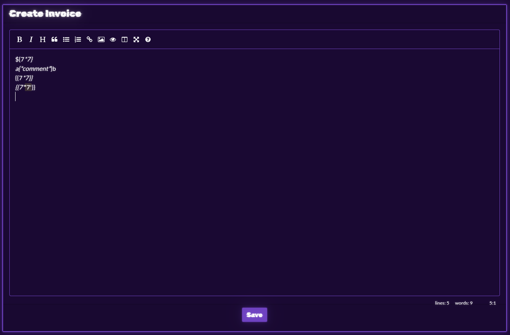

Cyber Apocalypse 2022 - Blinkerfluids
This was the first web challenge I solved in the Cyber Apocalypse 2022 CTF. This challenge had a downloadable portion with a fake flag as well as a web instance with an actual flag. Since the CTF has been over for a while and I didn't capture any of the actual challenge, I am recreating the steps I took here using the docker container.
Recon
First, I took a look at the challenge in a browser.
Invoices can be viewed and created.
My first thought was that there might be server side template injection (SSTI).
Unfortunately, that was not the case.
Analyze the source
For web challenges with downloadable docker instances, the first thing is to figure out what the back end is. Reading the source files here, this is a node.js app. For node apps, the best place to start looking is in the package.json. I want to see if there are any out of date or known vulnerable plugins. This app is using the following:
"express": "4.17.3", "md-to-pdf": "4.1.0", "nunjucks": "3.2.3", "sqlite-async": "1.1.3", "uuid": "8.3.2"
md-to-pdf is the first one that I look into more, because I know that there is an RCE vulnerability in certain versions.
This specific vulnerability it tracked as CVE-2021-23639.
A proof of concept is available at Synk
The poc was modified to output to a directory that is easy to access ---jsn((require("child_process")).execSync("id > /app/static/RCE.txt"))n---RCE
Unfortunately, all I got was "something went wrong" and some error messages in the docker log.
From previous experience, I knew that the n in that line might need to be \n, so I tried that as well.
That didn't work either.
Then I decided that it might literally need to be a newline in the textbox.
---js
((require("child_process")).execSync("id > /app/static/RCE.txt"))
---
and that worked.
Now, just change the exploit to copy the flag to somewhere we can read.
---js
((require("child_process")).execSync("cp /flag.txt /app/static/flag.txt"))
---
There's the flag.